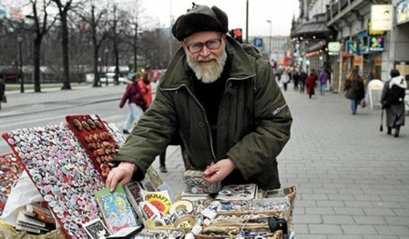

Minneord:
Ole Kopreitan (1937-2011)
Det var nesten som jeg ikke kunne tro mine egne øyne da jeg leste at Ole Kopreitan var død. Mennesker som Ole er liksom ikke ment til å dø, de er ment til å overleve alt. Men slik er det altså ikke i virkeligheten.
Vi var begge medlemmer i SUF på den tida det var ungdomsorganisasjonen til Sosialistisk Folkeparti, og han var flere ganger på Sunndalsøra og besøkte meg og familien min da vi bodde der.

Jeg husker en morsom episode fra den første gangen han kom. Det var i forbindelse med en valgkamp tidlig på sekstitallet. Han kom kjørende på motorsykkel og på veien nedover Sunndalen benyttet han anledninga til å henge opp valgplakater på lyktestolper. I en av disse lyktestolpene stakk det ut en for ham uheldig spiker, og han flerret opp det ene buksebeinet helt opp til … vel. Han var sant og si et ganske pussig syn da han stanset opp foran blokka vi bodde i. Min mor var en dyktig syerske. Han spurte om hun ville reparere buksa. Hun var ganske perfeksjonistisk i sånne sammenhenger og var mildest talt ikke særlig fornøyd med jobben hun hadde gjort og var vel mest stemt for å kaste den ødelagte buksa, men Ole var såre fornøyd, han!
Jeg har forresten et bilde av ham i albumet mitt fra en gang han talte 1. mai på Sunndalsøra. Det må ha vært i 1962.
Senere skilte vi jo (til en viss grad) lag politisk og gikk hver vår vei da SUF ble splittet. Men vi holdt faktisk kontakten sånn litt sporadisk og så sent som for et par år siden snakket vi med hverandre i telefonen og jeg sendte ham ei bok av meg som han hadde forsøkt å skaffe seg men som ikke lenger kunne kjøpes gjennom bokhandelen. Jeg pleide forresten også alltid å oppsøke ham på «standplassen» hans i Oslo når jeg var der og hadde muligheten til det.
Ole var en original, et helt uvanlig idealistisk menneske som jeg er glad for å ha møtt og kunne kalle en venn.